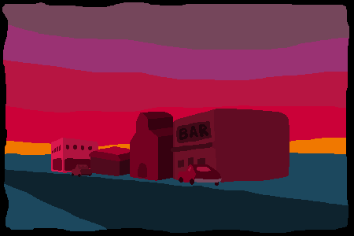
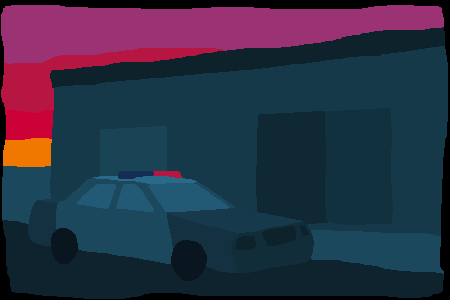
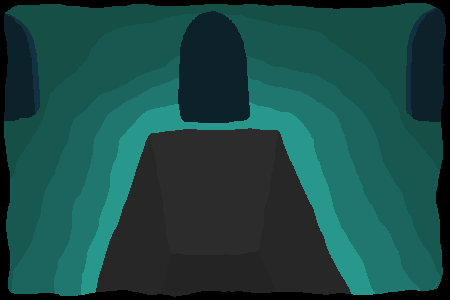

“‘Desert of Vice’ has it all: surreal scenes, a spooky mystery, coffee and donuts.” - Waypoint VICE
“For those looking to get lost in a realm where their sanity will be tested as they work deeper into an intriguing story, it offers some otherworldly mysteries to unravel.” - Indie Games
Desert of Vice is a unique text based horror adventure game. You have to type the desired action to see it come to life.
You play as a man lost in the desert who has to solve the mystery of an isolated town. The story, inspired by the literary works of Franz Kafka and H.P. Lovecraft, has six different endings. Which one you get depends on the choices you make. The game features a tailor-made soundtrack and a minimalist artstyle that compliment the spooky atmosphere of the story.
 Features:
Desert of Vice is available on the following platforms:


This game was made over the course of 1 ½ years by a single developer and won the Indie Prize for Best Game Narrative at Casual Connect London 2018.